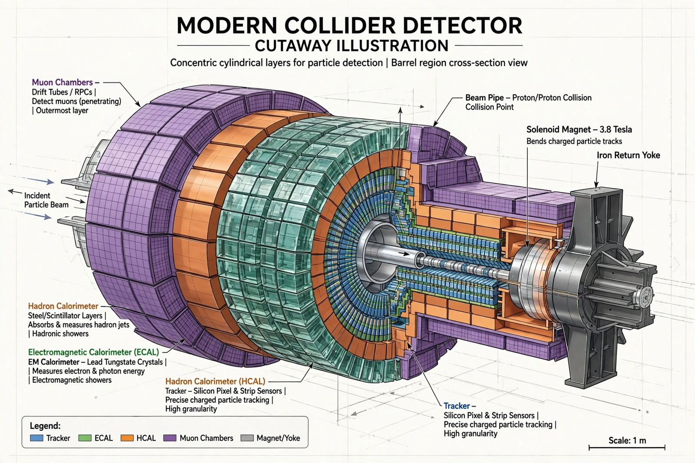

Particle detector

[Image: Cutaway illustration of a modern collider detector: concentric layers of tracking, calorimeters and muon chambers around the beam pipe]A particle detector (or radiation detector) is an instrument used to detect, track and identify ionising radiation and subatomic particles. Detectors translate invisible interactions into measurable signals — ionisation, scintillation light, Cherenkov light, transition radiation, or semiconductor charge — and are the senses of particle physics, nuclear physics, astrophysics and much applied science (medical imaging, security scanning, dosimetry).
The lineage runs from the gold-leaf electroscope and Geiger counter (1908) through the Cloud chamber and Bubble chamber to today's electronic giants: general-purpose collider detectors such as ATLAS and CMS at the Large Hadron Collider — layered cylinders of silicon trackers, calorimeters and muon chambers, tens of millions of channels read out in snapshots of each collision, with triggers discarding all but one crossing in a hundred thousand in real time. Georges Charpak's multiwire proportional chamber (1968, Nobel 1992) was the pivotal step that let detectors go electronic.
Design principles
Detectors are layered because particle species betray themselves in sequence: charged particles curve in the tracking volume's magnetic field (momentum and sign); electrons and photons stop in the electromagnetic calorimeter; hadrons penetrate to the hadronic calorimeter; muons alone reach the outer muon system; neutrinos escape entirely, inferred from missing momentum. Nearly every landmark — the J/ψ, the W and Z bosons, the top quark, the Higgs boson — is a pattern recognised in such layers.